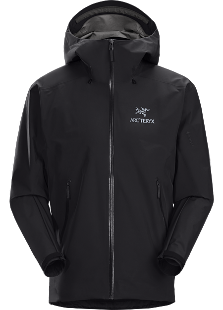
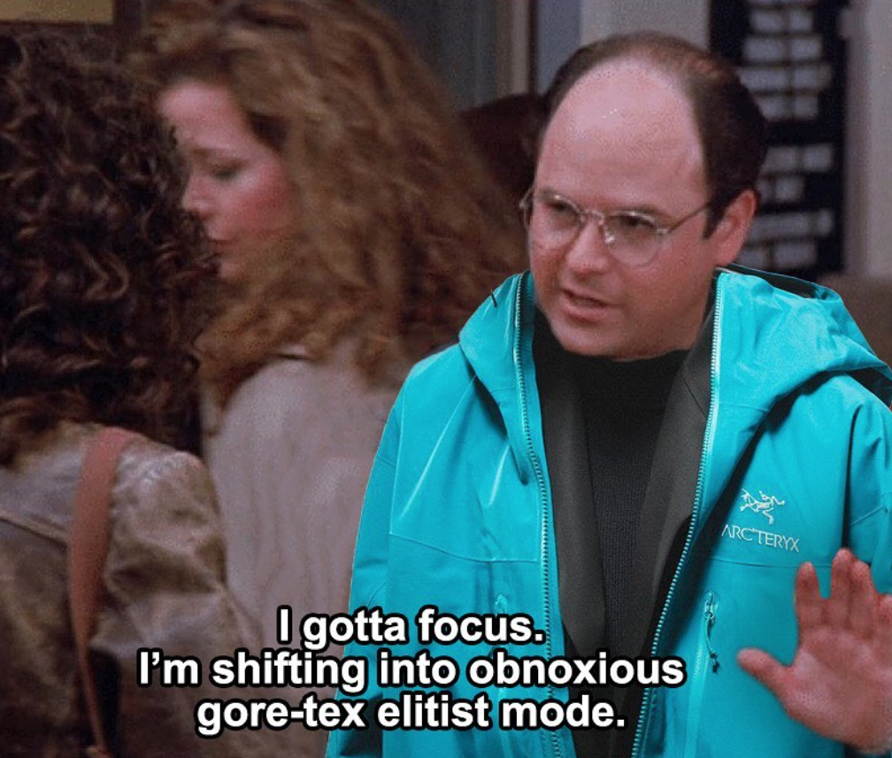
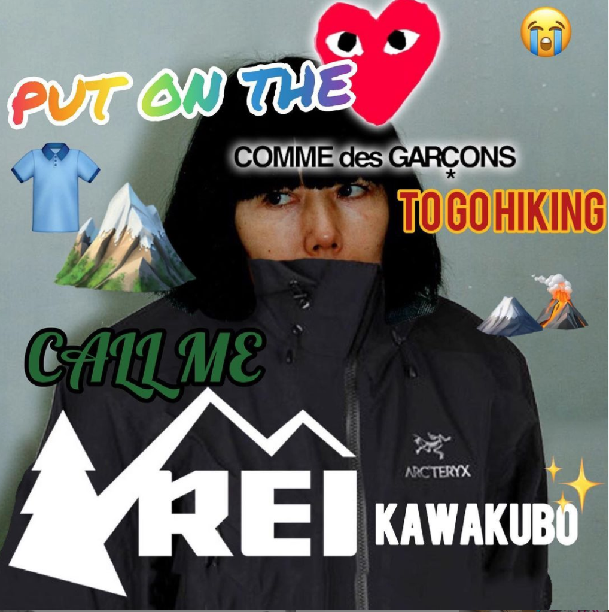

How Arc'teryx built an outdoors-wear empire

Like the Archaeopteryx, it's namesake, Arc'teryx aimed to take leaps. Through thoughtful design and revolutionary outdoor-wear, Arc'teryx evolved what it meant to explore.
Visit the Arc'teryx website
It comes at no surprise
In its history, its managed to create a cult-like following among some unlikely groups: outdoors afficionados and fashion lovers. With the brand's hyperfocus on quality and design, it comes at no surprise that their products are able to unite such a diverse group of people.
VIDEO
Louis Vuitton Creative Director Virgil Abloh Wearing Arc'teryx at the Off-White AW20 Show in Paris
"Stuntin' in my Arc'teryx"
In our digitalized world, its easy to see how communities form over the internet, such as the fashion community and outdoors community alike. The internet has allowed for people to form bonds from miles away, using all different types of media.


Arc'teryx memes by @pairofkingspod on Instagram